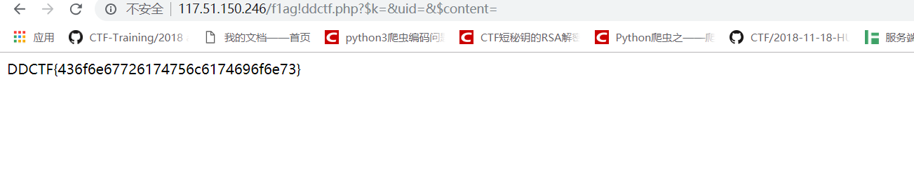

2019-04-25
Web
Web签到
首先打开题目发现权限不够不运行，登录，试了各种伪造ip发现不行，肯定是对ID进行的验证
于是抓包看了下，发现了GET完页面后会主动向 /app/Auth.php发送一个POST请求
而且里面存在一个ddctf_username=,很显然这个是验证.
尝试了下admin,发现可以
然后按照要求进入app/fL2XID2i0Cdh.php这个页面，发现了源码
在Application里面：
可以看到他存在一个str_replace的函数来过滤上级目录的符号，但是有个缺点只能过滤一次，使用….//就可以绕过
app/Session.php里面是主页面，读key.txt
这里主要就是序列化我们的userdata在于userdata拼接了key的md5进行拼接
所以基本上可以知道了，需要去伪造一个userdata去读取flag.txt。根据前面的str_replace函数可以构造path为….//config/flag.txt
又因为上面的session_create（）所以
第一步先读key：
post:nickname=%s
然后读到了Key:EzblrbNS
其次就是根据源码来写一个php脚本来构造我们需要的ddctf_id，把我们的路径加进去
1 | <?php |
然后利用我们构造好的ddctf_id用着访问index.php的方法去访问app/Session.php就可以成功getflag了
滴~
解题思路
http://117.51.150.246/index.php?jpg=TmpZMlF6WXhOamN5UlRaQk56QTJOdz09
后面是jpg是base64编码两次+base16编码一次
发现是一个本地文件包含，编码index.php,拿到源码
然后继续解密：
去这个博客，找到这篇博文
发现这个文件名，这个是脑洞
包含这个文件，解码得到了
观察源码，发现过滤了非字母和数字，但是会吧config替换为!
构造f1agconfigddctf.php
继续包含
解码base64 发现了源码
1 | <?php |
然后进行变量覆盖就好了
构造payload:http://117.51.150.246/f1ag!ddctf.php?$k=&uid=&$content=

flag：DDCTF{436f6e67726174756c6174696f6e73}
大吉大利，今晚吃鸡~
buy_ticket这个接口可以改金额，但不能改为负数，会报错
直接送一个int32_MAX+1进去，就可以溢出了，买完入场券可以入场
移除对手需要对手的id和ticket，写脚本爆破即可，在移除是的时候只有存在data的才算有效
附上我写的垃圾半自动脚本：
注册脚本：
1 | import requests |
1 | 获得注册用户的每个id和ticket: |
1 | 提交移除对手的id和ticket: |
Misc
wireshark
解题思路
打开wireshark以后，用wireshark打开以后导出http的包以后
看到有1个图片已经出来的，其次就是找找这些数据里面的图片，将他们提取出来
其中发现%5c(1)存在一张和%5c(4)存在一张，提取完毕以后是这样的。
然后修改下钥匙图形的高宽可以看到隐藏的信息
其次可以观察到%5c(4)和fd开头的那个图片长得一样，但是看大小和详细信息，可以知道fd是压缩过的%5c(4)，所以只需要从%5c(4)上下手就可以了。
用在线工具：http://tools.jb51.net/aideddesign/img_add_info
直接进去输入图片和key就可以解出密文了
然后可以看到44开头就是DD的意思，很显然这个就是flag了。用随便什么方法去转换一下就OK
flag:DDCTF{QEWokcpHeUo2WOfBIN7pogIWsF04iRjt}
注意的地方：这里在用在线工具提取的时候，需要注意浏览器。
MulTzor
原文为英语，请破解
014e084dda666a631b58d361627e5a5bcc327f651f14ef7c626a17558a71627d1251d87b656a5a47d3617f681714cf7c6a6f1651ce327f651f14dd7778791f46c4324a61165dcf612b641414fd7d79611e14fd73792d337d8a66642d0851cb762b7e0f56d9666a630e5dcb7e2b6c175bdf7c7f7e5a5bcc3246620847cf3f68621e51ce32796c1e5dc53268621759df7c626e1b40c37d657e5a5bcc327f651f14eb6a627e5a44c5656e7f0914de7a6a795a5ccb762b6f1f51c4326e63195dda7a6e7f1f508a67786414538a5765641d59cb32666c195cc37c6e7e5414fe7a627e5a4dc37767691f508a7f62611340cb60722d135ade7767611353cf7c68685a43c27b68655614cb7e64631d14dd7b7f655a40c2737f2d1c46c57f2b620e5ccf602b691f57d86b7b791f508a5373640914d8736f641514cb7c6f2d0e51c6777b7f135ade77792d0e46cb7c78601347d97b646309188a656a7e5a53c3646e635a40c2772b6e1550cf7c6a601f14ff7e7f7f1b1a8a4663640914dd73782d195bc46162691f46cf762b6f0314dd7778791f46c43258780a46cf7f6e2d3b58c67b6e695a77c57f666c1450cf602b490d5dcd7a7f2d3e1a8a57627e1f5ac27d7c680814de7d2b651b42cf3269681f5a8a306f68195dd97b7d685814de7d2b7912518a5367611351ce327d641940c5607223703efe7a6e2d3f5ac375666c5a59cb7163641451d9327c6808518a732b6b1b59c37e722d15528a62647f0e55c87e6e2d195dda7a6e7f5a59cb7163641451d9327c640e5c8a60647915468a61687f1b59c87e6e7f091a8a5564621e14c5626e7f1b40c37c6c2d0a46c5716e690f46cf61272d0a46c5626e7f164d8a77656b1546c9776f215a43c56767695a5ccb646e2d1755ce772b7912518a6267781d56c57379695a71c47b6c601b14c7736865135acf327e631846cf73606c1858cf3c2b451543cf646e7f5614c77d78795a5bcc327f651f14ed7779601b5a8a7f62611340cb60722d1c5bd8716e7e5614d977687f1f408a616e7f0c5dc977782d1b5ace3268640c5dc67b6a635a55cd77656e1351d9327f651b408a6778681e14ef7c626a17558a77667d165bd3776f2d0a5bc5602b620a51d8737f6414538a6279621951ce67796809188a7365695a5dde327c6c0914de7a6e7e1f14da7d647f5a44d87d68681e41d877782d0e5ccb662b6c1658c5656e695a40c2772b48145dcd7f6a2d1755c97a62631f478a66642d18518a606e7b1f46d97726681453c37c6e680851ce326a631e14de7a6e2d195dda7a6e7f0914de7d2b6f1f14d8776a69543ea04663685a73cf60666c1414da7e7e6a185bcb606f201f45df7b7b7d1f508a5765641d59cb3269681955c7772b431b4ec3324c680859cb7c722a0914da606263195dda73672d1946d3627f625747d3617f68171a8a5b7f2d0d55d932697f155fcf7c2b6f0314de7a6e2d2a5bc67b78655a73cf7c6e7f1b588a417f6c1c528d612b4e1344c277792d3841d8776a785a5dc4324f681951c7706e7f5a05932139215a43c366632d0e5ccf326a641e14c5742b4b0851c47163200941da6267641f508a7b65791f58c67b6c681457cf32666c0e51d87b6a615a5bc8666a641451ce326d7f15598a732b4a1f46c773652d0944d33c2b4c5a59c57c7f655a56cf74647f1f14de7a6e2d1541de7079681b5f8a7d6d2d2d5bd87e6f2d2d55d83242445614cb662b6c5a57c57c6d680851c4716e2d1251c6762b631f55d8325c6c0847cb65272d0e5ccf325b62165dd97a2b4e1344c277792d3841d8776a785a47c27379681e14c366782d3f5ac375666c5756d8776a66135acd327f68195cc47b7a781f478a7365695a40cf7163631558c575722d0d5dde7a2b7912518a5479681457c2326a631e14e86062791347c23c2b490f46c37c6c2d0e5ccf324c680859cb7c2b641442cb6162621414c5742b5d1558cb7c6f215a57c5606e2d2a5bc67b78655a77c36263680814e86779681b418a626e7f095bc47c6e615a43cf606e2d1f42cb717e6c0e51ce3e2b7b13558a4064601b5ac373272d0e5b8a54796c1457cf327c651f46cf327f651f4d8a7778791b56c67b78651f508a6663685a64e932497f0f5ac53278641d5acb7e782d135ade7767611353cf7c68685a47de737f64155a8a6562791214ec606e63195c8a746a6e1358c36662680914d9677b7d1546de3c2b5e0f57c977787e1c41c63268621544cf606a79135bc4326a60155acd327f651f14fa7d676809188a6663685a72d877656e12188a7365695a40c2772b4f085dde7b78655a55de3249611f40c97a67680314fa7379665a57c57c7f641441cf762b781440c37e2b470f5acf323a344e0486327c651f5a8a54796c1457cf3278780846cf7c6f680851ce327f625a40c2772b4a1f46c773657e543ea05479621714de7a627e5a56cf756263145dc475272d0e5ccf32497f1340c361632d3d5bdc7779631751c4662b4e1550cf326a631e14e96b7b651f468a416865155bc632234a3912e941222d1b408a5067680e57c27e6e745a64cb60602d1841c37e7f2d0f448a73652d1f4cde77657e1342cf32687f0344de73656c164dde7b682d1955da736964165dde6b252d335ac366626c1658d33e2b7912518a766e6e084dda6662621414dd73782d1755c37c67745a5bcc3247781c40dd736d6b1f1482556e7f1755c4326a640814cc7d796e1f1d8a7365695a558a746e7a5a7ccf77792d5273cf60666c1414cb6066745314c777787e1b53cf61272d1b478a6663685a7fd87b6e6a0959cb6062631f1482556e7f1755c432656c0c4d83326e600a58c56b6e695a59df71632d175bd8772b7e1f57df606e2d0a46c5716e690f46cf612b6b15468a67786414538a5765641d59cb3c2b4c1655c4325f78085dc475272d1b14e973666f085dce756e2d2f5ac3646e7f095dde6b2b601b40c277666c0e5dc97b6a635a55c4762b611553c371626c14188a6279620c5dce776f2d1741c97a2b621c14de7a6e2d1546c37562631b588a666364145fc37c6c2d0e5ccb662b611f508a66642d0e5ccf326f68095dcd7c2b621c14de7a6e2d1946d3627f6c1455c66b7f641955c63269621756cf32666c195cc37c6e7e5a40c2737f2d0d51d8772b641447de607e601f5ade73672d135a8a777d681440df7367610314c8606e6c115dc4752b7912518a7c6a7b1b588a5765641d59cb3c2b451543cf646e7f5614de7a6e2d3146c3776c7e1755d87b65685a5dc46679621e41c9776f2d1b5a8a5765641d59cb327d680847c37d652d0d5dde7a2b6c5a52c56779791214d87d7f620814cc7d792d1340d9325e20185bcb6678215a46cf617e610e5dc4752b641414cb327b7f1558c57c6c681e14da77796415508a6563681414de7a6e7e1f14c777787e1b53cf612b6e1541c6762b6315408a706e2d1e51c960727d0e51ce3c2b5a1340c2327f651f14c9737b790f46cf32646b5a46cf7e6e7b1b5ade3268640a5ccf602b661f4dd9326a631e14de7a6e2d0f47cf32646b5a59df71632d1c55d9666e7f5a61f932456c0c4d8a7064601851d93e2b7f1f53df7e6a7f5614d8737b641e14d8776a69135acd32646b5a618770646c0e14c777787e1b53cf612b7f1f47df7f6e69543ea04663685a52c6736c2d134790324f493960ec693b3a1805c8263d694b50c82033354e07ce236d694d02922a326b1f559370383b07
试了各种编码方式，最后在https://github.com/zardus/ctf-tools 看到了xortool，于是用这个工具进行破解:
1 | xortool -x -b misc3.txt |
查看filename-char_used-perc_valid.csv文件，过滤出perc_valid=100的文件
1 | xortool_out/064.out;32;100.0 |
一个一个看，发现flag在064.out里。
查看filename-key.csv,可以看到爆破出的key为** \x0b\rz4\xaa\x12**
但是有朋友的密文这样做会出现乱码，那是因为我们爆破出来的key部分有问题，需要手动更正，然后去跑脚本就可以出
比如这样的情况下我出来的key里面的头不对
就必须手动更正一下然后跑脚本
UPLOAD_IMG
看样子是个上传题目，只能上传图片，但是发现上传上去有两个问题
第一个，如果图片内没有phpinfo()就会提示：
第二个，如果存在了phpinfo()就会提示报500错误
果断我们从第一个问题下手，发现他在提示了错误以后会显示我们的图片，这时候保存一下这张图片用hxd打开看看里面的数据
发现了这里存在一个gd-jpeg的php的库，说明我们的图片被渲染了，可以知道这个是个二次渲染的题目。经过找了一系列资料以后，从这里看的还比较靠谱：
https://xz.aliyun.com/t/2657
因为比较懒，不想去跑脚本，直接使用了文章当中的素材，但是最后还需要修改一下上传渲染图片里面的phpinfo()的f被变成了6E，改成66就成功了。
最后成功上传拿到flag：
联盟决策大会
p =
C53094FE8C771AFC900555448D31B56CBE83CBBAE28B45971B5D504D859DBC9E00DF6B935178281B64AF7D4
E32D331535F08FC6338748C8447E72763A07F8AF7
组织1成员1 =
30A152322E40EEE5933DE433C93827096D9EBF6F4FDADD48A18A8A8EB77B6680FE08B4176D8DCF0B6BF5000
0B74A8B8D572B253E63473A0916B69878A779946A
组织1成员2 =
1B309C79979CBECC08BD8AE40942AFFD17BBAFCAD3EEBA6B4DD652B5606A5B8B35B2C7959FDE49BA38F7BF3
C3AC8CB4BAA6CB5C4EDACB7A9BBCCE774745A2EC7
组织1成员4 =
1E2B6A6AFA758F331F2684BB75CC898FF501C4FCDD91467138C2F55F47EB4ED347334FAD3D80DB725ABF654
6BD09720D5D5F3E7BC1A401C8BD7300C253927BBC
组织2成员3 =
300991151BB6A52AEF598F944B4D43E02A45056FA39A71060C69697660B14E69265E35461D9D0BE4D8DC29E
77853FB2391361BEB54A97F8D7A9D8C66AEFDF3DA
组织2成员4 =
1AAC52987C69C8A565BF9E426E759EE3455D4773B01C7164952442F13F92621F3EE2F8FE675593AE2FD6022
957B0C0584199F02790AAC61D7132F7DB6A8F77B9
组织2成员5 =
9288657962CCD9647AA6B5C05937EE256108DFCD580EFA310D4348242564C9C90FBD1003FF12F6491B2E67C
A8F3CC3BC157E5853E29537E8B9A55C0CF927FE45
定义在有限域size=P上的一个shamir算法，直接复制了wiki的代码跑就行了..
每个组织的key可以combine出一次明文作为新的key，最再combine一次就得到了int(flag)
https://en.wikipedia.org/wiki/Shamir%27s_Secret_Sharing
1 |
|
地铁图片
根据题目的意思可以得出一个lsb的隐写：
可以看出密文：iKk/Ju3vu4wOnssdIaUSrg==
根据提示属于AES加密，但是秘钥需要爆破，不足的位数用\0补齐。但是AES秘钥是16的倍数。
根据题目的提示3，将所有的地铁路线都弄成小写字母做成一个字典跑一下。最后就可以得出结果。
字典太大就不传了，上传一下脚本
1 | #coding=utf-8 |
跑出来的结果
flag:DDCTF{CD*Q23&0}
Reverse
obfuscating macros
先看main函数：
存在两个函数分层进行判断
第一个函数:sub_406906:
通过调试下内存断点可以知道，这个函数对我输入的值进行了16进制转换并且检查了16进制的大小写。
比如输入：1234 -> \x12\x34 1E5E ->\x1E\x5E
然后就是第二个sub_4013E6：
主要就需要看这个部分就可以了
前面设置了v24为上面函数处理过的HEX的值，然后通过v4与v26进行相减，只要v4的结果为0那么就是最小了，所以只需要关注v26的值就好了。
对v26的值进行监视发现最后的结果就是flag了。